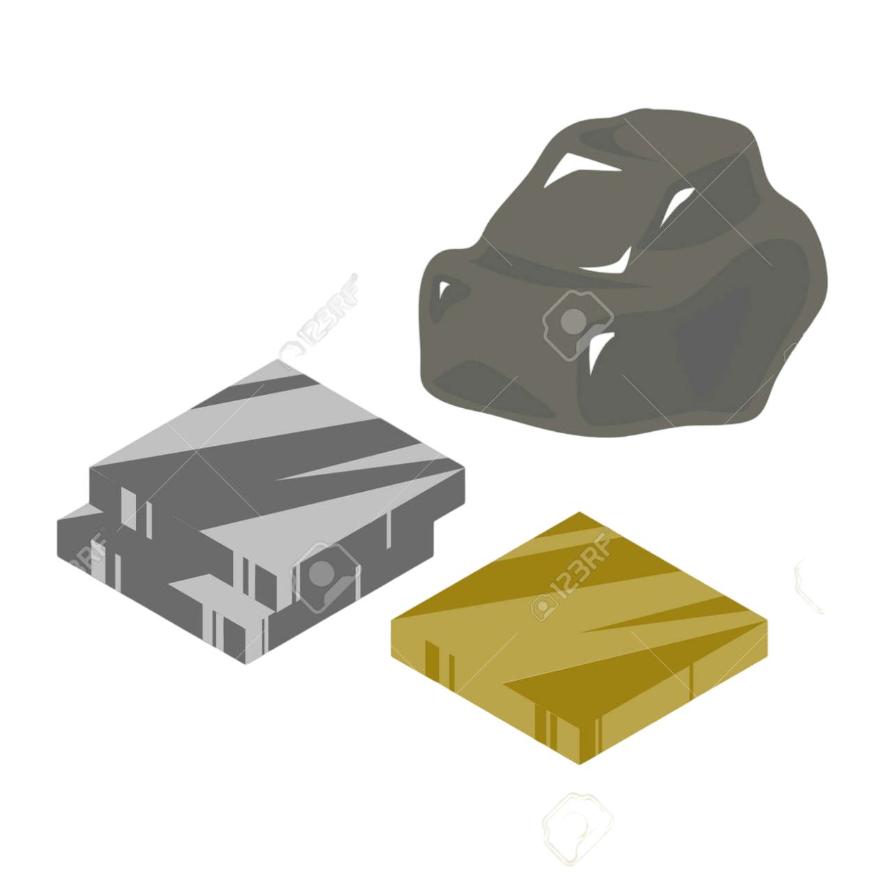
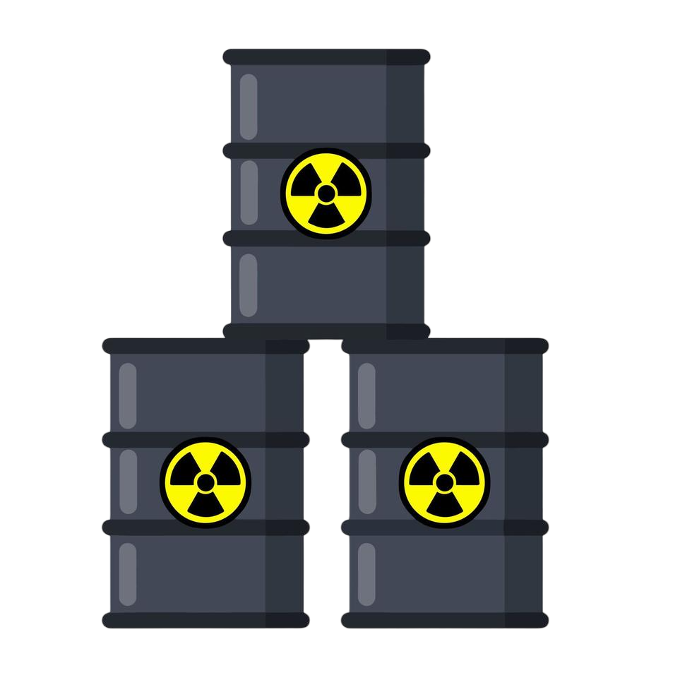
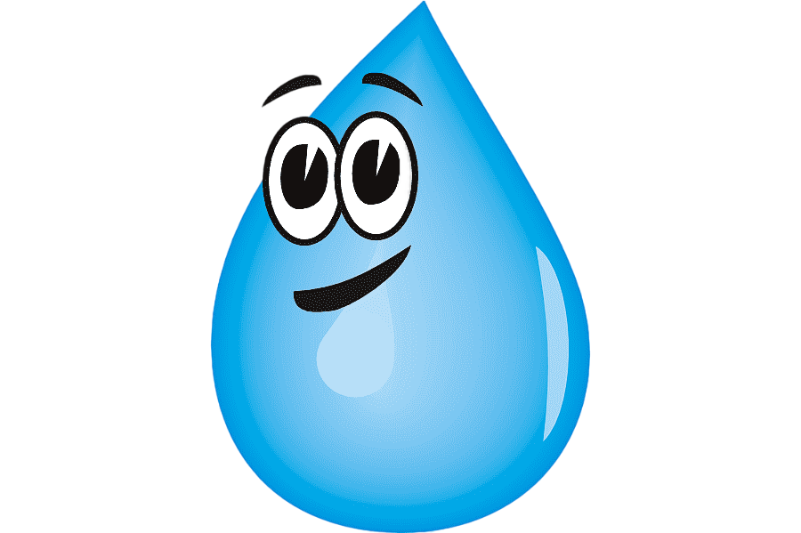
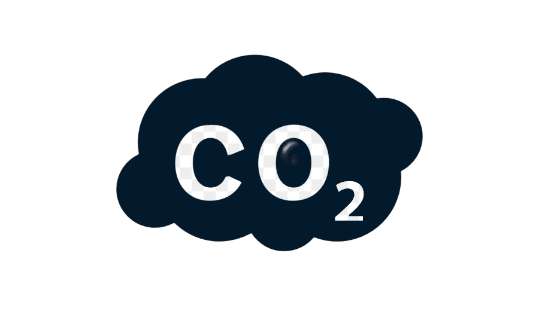

18, c'est le nombre de matériaux rares que comportent chaques ordinateurs portable.
600kgs de matière première extraite pour fabriquer un seul ordinateur de 2kgs.

240kgs d'énergie à combustible fossile nécessaire à la fabrication d'un ordinateur.
1,5 tonnes d'eau.

22kgs de produits chimiques.
L'impact carbone d'un ordinateur s'élève à 169kgs eq CO2.
